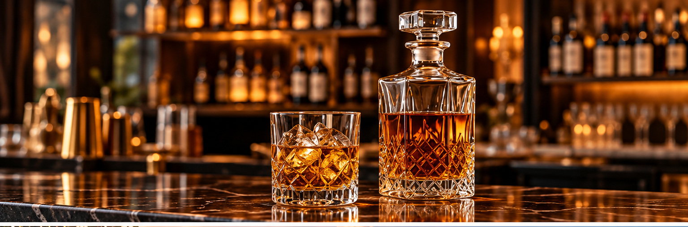
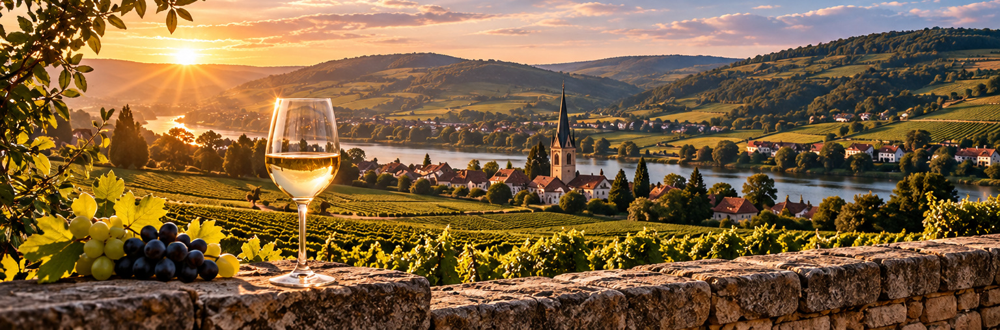

Still Wines
Red, white and rosé wines, with distinct expressions shaped by grape varieties, climate, terroir and winemaking traditions.
An introduction to the diversity of wine and beverage traditions.
From still wines to celebratory sparkling expressions, the international beverage landscape offers remarkable variety. These categories illustrate the areas associated with MC GROUP's trade profile; they are not a live product inventory.
Red, white and rosé wines, with distinct expressions shaped by grape varieties, climate, terroir and winemaking traditions.

A celebrated French sparkling wine with a rich heritage of craftsmanship and regional identity.

Bright, expressive sparkling styles enjoyed across a range of occasions and cultures.

A wider category of distilled beverages that reflects the diversity of international drinks traditions.
France, Italy and Spain are among the countries identified in historical trade descriptions connected with MC GROUP. Each offers a distinctive culture of wine production and an extraordinary diversity of styles.
Our website introduces these traditions without making claims about individual brands, exclusive representation or current stock.
